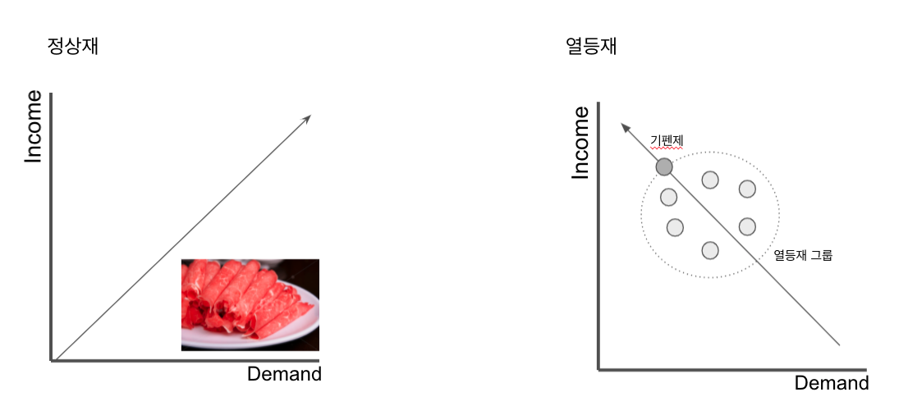

희소성은 경제학 이론의 출발이다. 사람의 욕망에 비하여 그것을 충족 시켜주는 수단이 양적이나 질적으로 유한하여 부족한 상태를 이르는 말이다.
기회비용
경제학은 한정적인 자원을 가장 효율적으로 배분하는 것을 연구하는 학문이다. 하나를 택하면 하나를 버려야 한다. 그래서 세상에 공짜 점심은 없다고 말한다. 어떤 선택을 위해 포기한 모든 것을 경제학에서는 기회비용이라고 부른다. 예를 들어서 식당을 운영하다가 영하를 보러 갔다가 해보자. 영화 비용으로 쓴 1만원은 명시적인 비용이고, 식당 운영 수익은 암묵적 비용이다. 회계사 관점에서 영화 비용으로 쓴 1만원을 기회 비용이라고 계산한다. 경제학자라면 영화를 보느라 포기한 식당 운영 수익도 추정해서 더한다. 회계사 식으로 판단하면 기회비용이 축소 되고, 경제학자 처럼 바라보면 너무 부풀려 질 수 도 있다. 경제학원론에서 기회비용은 새롭게 익히는 중요한 개념 가운데 하나다. 우리가 여러 길들 가운데 어떤 특정한 길을 선택하면, 가보지 않은 다른 길들이 남게 된다. 이 가보지 않은 길들은 내게 다양한 가치들을 있다. 그런 길들을 선택하지 않았던 이유는 지금의 길이 내게 가장 높은 가치를 줄 것이라고 판단했기 때문이다. 가보지 않은 길들 중에 가장 나에게 높은 가치가 있었을 길이 나에겐 기회비용이다.
희소성의 원칙
모든 경제 문제는 희소성의 원칙에서 발생한다. 선택이라는 과정은 필연적으로 기회 비용이 발생한다. 예를 들어 어떤 가게의 유리창이 깨졌다고 해보자. 경제 개념이 없는 경제학자의 눈에는 “가게 주인이 깨진 유리창을 갈기 위해 새로운 유리창을 주문하고, 돈을 받은 유리 공장 사장이 다시 다른 물건들을 주물할 것이고, 수요가 수요를 파생할 것입니다.” 라고 말할 수 있을것이다. 그런데, 만약 유리가 깨지지 않았더라면 그 돈으로 다른 재회 생산에 투자할 수 있었다. 유리창이 깨진 만큼 그 사회는 부를 상실한 것이다. 기업가는 항상 기업에 투자함으로써 이윤은 기회비용 보다 많이 남겨야한다.
매몰비용
매몰 비용은 이미 매몰되어 버려서 다시 되돌릴 수 없는 비용이다. 즉 의사 결정을 하고 실행한 이후에 발생하는 비용 중 회수할 수 없는 비용을 말하며, 함몰 비용이라고도 한다. 예를들면 3만원 짜리 스파게티를 먹고 계산하면 3만원은 매몰비용으로 환불되지 않는 것이다.
과시적 소비
N사의 핸드백이 300백만원일때, 보통 브랜드와 품질차이는 없다. 명품이란 브랜드를 원하는 이유는, 명품이기 때문이다. 명품은 비싸기 때문에 의미가 있다. 명품을 구입하는 이유는 과시적 소비에 있다. 과시적 소비는 경제적 생활에 도움이 될때가 있다. 예를 들어 A씨 변호사의 마당에 벤츠 500이 주차가 되어 있다. 그리고 명품 양복을 입고 있다. E씨 번호사의 마당에는 경차가 주차되어 있다. 15년된 양복을 입고 있다. 두 사람은 똑같은 수임료를 요구한다고 했을때, 어떤 변호사에게 갈것인가?
정상재
정상재(normal goods)는 소득이 늘어나면 소비가 늘어나는 재화를 의미한다. 소고기와 돼지고기중 소고기가 해당한다.
열등재
열등재(inferior goods)은 소득이 늘어나면 소비가 줄어드는 재화를 의미한다. 소고기와 돼지고기중 돼지고기에 해당한다.

보완재
커피 수요가 증가하면 도넛(보완재)의 수요도 증가한다. 빵의 수요가 증가하면 버터(보완재)의 수요도 증가한다.
대체재
대체재(substitute goods)는 동일한 쓰임이 있는 재화를 의미한다. 어느 한쪽의 가격이 오르면 다른 한쪽의 가격은 내린다. 버터(대체재)의 수요가 증가하면, 마가린의 수요는 감소한다. 소고기(대체재)의 수요가 증가하면 돼지고기 수요는 감소한다.
기펜제
기펜제(Giffen Goods)는 열등재(소득 증가시 소비가 줄어드는 재화) 중에서도 가장 싸구려 재화를 의미한다. 가격이 인하되자 수요가 감소하며 싸구려가 되는 재화이다.
기펜제라는 용어는 영국의 경제학자 로버트 기펜(Robert Giffen)으로 부터 유례했다. 기펜제는 아일런드 사람의 소비패턴의 역설을 발견한다. 아일랜드 사람은 감자를 주식으로 했는데, `감자가격이 떨어지면 감자 수요량이 늘어야 할것 같은데, 감자 수요량이 줄어들었다.` 이를 두고 `기픈의 역설`이라고 부른다. `수요의 법칙`에 따르면 가격이 내려가면 수요가 증가 해야 한다. 그런데, 감자 가격이 떨어지면 감자 수요량이 줄어든 것이다. 왜 그럴까? 감자를 좋아해서 먹은 것이 아니라 가난해서 먹은 것이기 때문이다. 감자 가격이 떨어지니까, 생활의 여유가 생겨 감자를 안먹게 된 것이다. 비슷한 예로 쌀과 보리의 예가 있었다. 가난 했을 시절에는 `보리`를 주식으로 했던 적이 있었지만 보리 가격이 하락 하면서 보리 소비가 줄고, 쌀 소비가 늘게 된 것이다. 삶의 질이 올라가면서 쌀을 소비 하게 되면서 보리는 수요가 줄어들고 싸구려가 된 것이다.